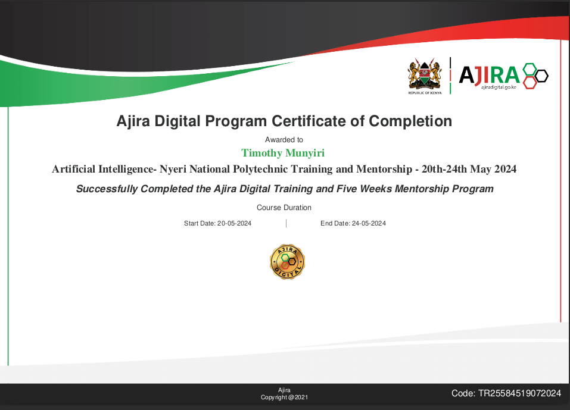
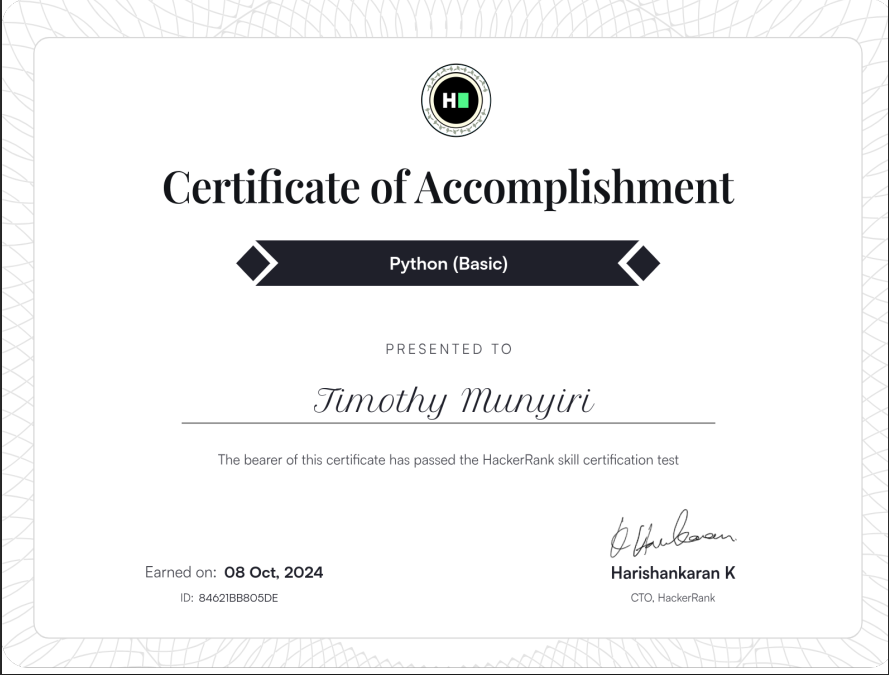
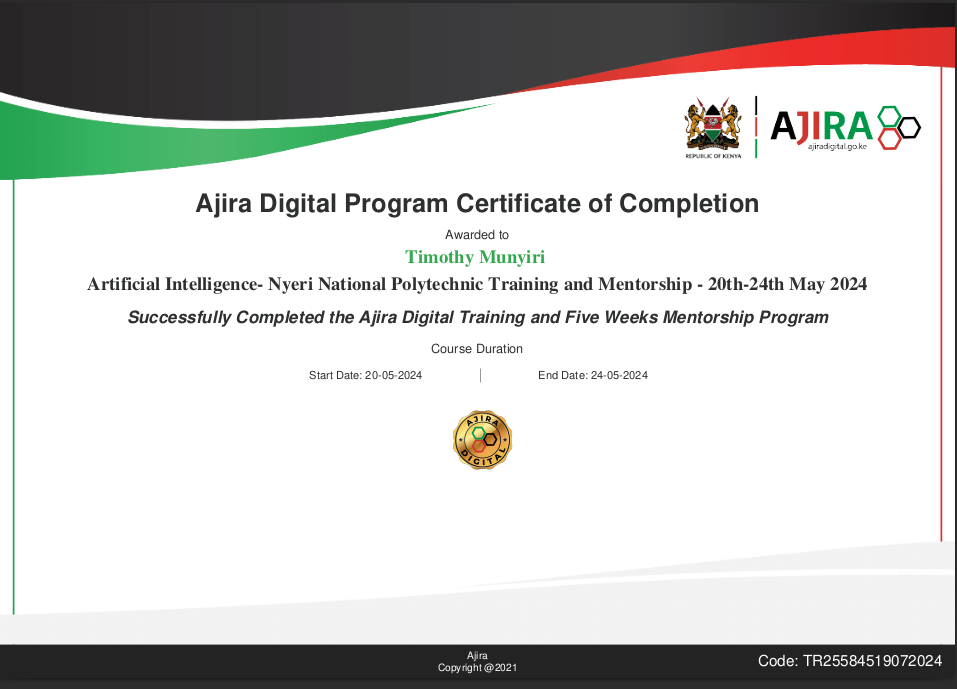
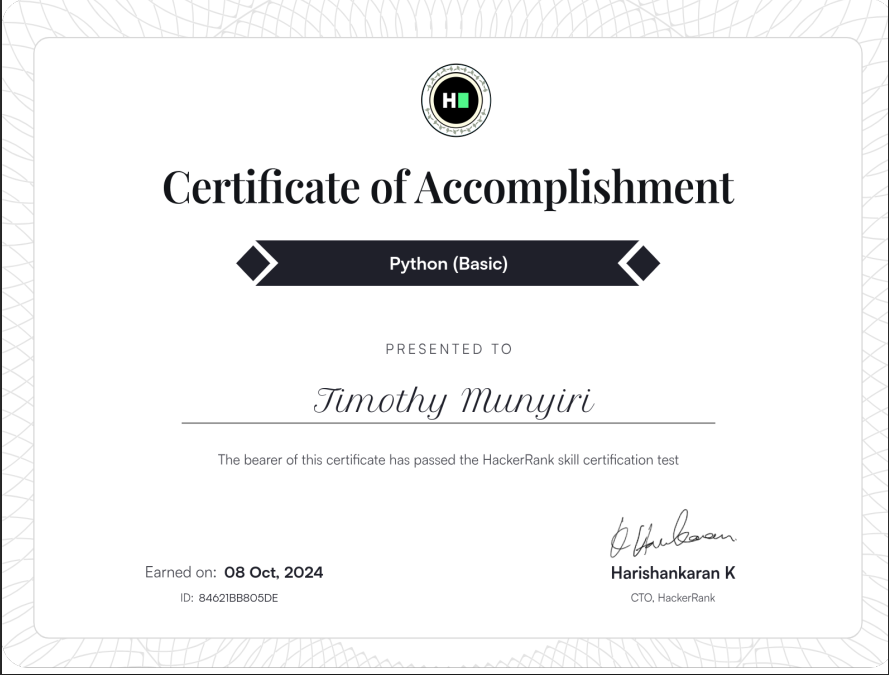

Professional Profile
Innovative and detail-oriented ICT Officer with over 5 years of experience in software development, IT infrastructure management, and cloud technologies. Expertise in optimizing network systems, implementing cloud-based solutions, and enhancing system performance. Adept at troubleshooting, configuring hardware and software systems, and improving operational efficiency. Strong leadership skills with a proven track record in team collaboration and system integration. Passionate about driving technology improvements and continuous learning.
Work Experience
DMS Superuser Intern, Wamuti Distributors Ltd
- Data Entry and Data Analysis using Distributor management systems for use in decision-making.
- Installing and configuring computer hardware, software, systems, networks, printers, and scanners monitoring and maintaining computer systems and networks
- Responding in a timely manner to service issues and requests
- Provided real-time technical support for hardware, software, and networking issues, ensuring minimal downtime.
Software Engineer Intern, ALX
June 2022 – November 2023 / Online
I was inspired to pursue a career in software development by my love of problem-solving and my desire to create things. I have always been fascinated by how computers work and how they can be used to solve complex problems. I am also excited by the potential to use software to make a positive impact on the world.
- Developed RESTful APIs in Python (Flask), integrating with dynamic front-end user interfaces in JavaScript.
- Conducted code reviews and pair programming sessions, promoting best practices in software development.
- Enhanced system reliability through the automation of data validation processes, reducing error rates by 30% and manual validation time by 40 hours per month.
Career Summary
March 2024 – July 2024
The Nyeri National Polytechnic,
Software Developer, Student
OutlineSteering multiple projects from conception to deployment, specializing in scalable cloud-based solutions for client. Fostering a culture of quality coding, innovation, and continuous improvement.
Key Responsibilities- Develop and maintain scalable web applications using Flask, RESTfulAPIs and SQL.
- Lead the transition to enhancing deployment frequency and reliability focusing on scalable, cloud-based solutions.
- Spearheading the integration RESTful API for seamless third -party services integration.
- Integrate user authentication features into web applications, strengthening security protocols across systems.
- Enhance in system performance by refactoring legacy code, resulting in 25% increase in application speed and significant reduction in server load.
- Spearhead the development of a new user authentication feature using Flask, NodeJs, and Typescript which improves security and it’s integrated into all my web applications.
Certificates
 



Contact Information


- Full Stack Development
- Network Configuration & Troubleshooting
- Hardware/Software Systems Installation
- Data Management & Security
- Agile Methodology
- Test-Driven Deployment (TDD)
- RESTful API Design & Development
- Data Structure & Algorithms
- Problem Solving & Debugging
- Version Control (Git)
- Python (Flask/ Django)
- Java
- JavaScript (jQuery/Node.Js/Typescript)
- SQL(MySQL, NoSQL, PostgreSQL)
- HTML/CSS
Core Skills
- Diploma in ICT, The Nyeri National Polytechnic
- ALX SE Back End Certificate.
- Kenya Certificate of Secondary
Education, St. Lassalle Secondary
school
Education
- Provided technical support in ICT training and system troubleshooting for local community projects.
Voluntary Work
- Drawing
- Coding
- Reading novels
Hobbies
- Patrick Wanjau Software Engineer,
- Consultant 0725313338.
Referee
- Mwangi Agnes
- Head of Department, computer Science and Networking.
- hodcsn@thenyeripoly.ac.ke
- 0773686436